Mediation analysis goes beyond asking “does the treatment work?” to ask “how does the treatment work?” Understanding the mechanisms by which an intervention achieves its effect can have important implications for what treatments or policy changes are preferable. For instance, a family intervention program during adolescence might reduce substance use disorder in young adulthood, but through which pathways? Should the intervention focus on reducing peer influence, or on curbing direct experimentation?
This notebook demonstrates how to perform causal mediation analysis using PyMC and the do operator. We decompose the total causal effect of a treatment into direct and indirect components, quantifying each pathway’s contribution with full Bayesian uncertainty.
To illustrate the techniques, we port the ChiRho mediation analysis example to PyMC, using the same techniques as the previous blog post Introduction to Causal Inference with PPLs. Moreover, we deep dive into the decomposition of the total effect into direct and indirect components by reproducing the work StatsNotebook: Causal Mediation Analysis, which was ChiRho’s original source.
Prepare Notebook
from itertools import product
import arviz as az
import graphviz as gr
import matplotlib.pyplot as plt
import numpy as np
import polars as pl
import pymc as pm
import pytensor.tensor as pt
import seaborn as sns
import xarray as xr
from pymc.model.transform.conditioning import do, observe
from scipy.special import expit
az.style.use("arviz-darkgrid")
plt.rcParams["figure.figsize"] = [10, 6]
plt.rcParams["figure.dpi"] = 100
plt.rcParams["figure.facecolor"] = "white"
%load_ext autoreload
%autoreload 2
%config InlineBackend.figure_format = "retina"seed: int = 42
rng: np.random.Generator = np.random.default_rng(seed=seed)Causal DAG
We use a synthetic dataset with 553 simulated individuals studying the effect of family intervention during adolescence on future substance use disorder. The dataset was discussed in StatsNotebook’s blog post and the data can be found here.
Variables:
gender: binary (Female / Male)conflict: level of family conflict (ordinal, ~1-5)fam_int: participation in family intervention during adolescence (binary, treatment)dev_peer: engagement with deviant peer groups (binary, mediator 1)sub_exp: experimentation with drugs (binary, mediator 2)sub_disorder: diagnosis of substance use disorder in young adulthood (binary, outcome)
We are interested in the effect of family intervention (fam_int) on substance use disorder (sub_disorder).
The causal DAG encodes our structural assumptions. The variables gender and conflict are exogenous covariates that influence all downstream variables. The variable fam_int (treatment) affects both mediators (dev_peer, sub_exp) and the outcome (sub_disorder) directly. The mediators also affect the outcome. The direct edge fam_int → sub_disorder is included to capture the direct effect of family intervention on substance use disorder that does not operate through the mediators.
dag = gr.Digraph()
dag.node("gender")
dag.node("conflict")
dag.node("fam_int", style="filled", color="#2a2eec80")
dag.node("dev_peer", style="filled", color="#ff7f0e80")
dag.node("sub_exp", style="filled", color="#ff7f0e80")
dag.node("sub_disorder", style="filled", color="#328c0680")
for target in ["fam_int", "dev_peer", "sub_exp", "sub_disorder"]:
dag.edge("gender", target)
dag.edge("conflict", target)
dag.edge("fam_int", "dev_peer")
dag.edge("fam_int", "sub_exp")
dag.edge("fam_int", "sub_disorder")
dag.edge("dev_peer", "sub_disorder")
dag.edge("sub_exp", "sub_disorder")
dag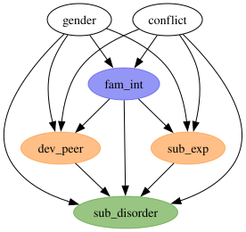
Read and Preprocess Data
Now that we have an understanding of the data and an explicit causal model through a causal DAG, we read the data and preprocess it for modeling.
Remark (missing data): The original blog post handles missing data using multiple imputation (20 imputations via MICE). For simplicity, we drop rows with any missing values. This reduces the sample from 553 to ~410 observations (~25% drop). Since missingness may be related to covariates or outcomes, this could introduce selection bias. We do this as ChiRho does and we want to keep the analysis simple. That being said, it is very important to handle missing data properly!
data_url = "https://statsnotebook.io/blog/data_management/example_data/substance.csv"
raw_df = pl.read_csv(data_url, null_values="NA")
print(f"Number of individuals: {len(raw_df)}")
data_df = raw_df.drop_nulls().with_columns(
pl.col("gender").eq(pl.lit("Male")).cast(pl.Int64)
)
n_obs = len(data_df)
print(f"Number of individuals without missing values: {n_obs}")
data_df.head()Number of individuals: 553
Number of individuals without missing values: 410| gender | conflict | dev_peer | sub_exp | fam_int | sub_disorder |
|---|---|---|---|---|---|
| 0 | 3.0 | 1 | 0 | 0 | 0 |
| 0 | 3.0 | 1 | 1 | 0 | 0 |
| 1 | 4.0 | 1 | 1 | 0 | 1 |
| 0 | 2.6 | 1 | 1 | 0 | 0 |
| 0 | 2.0 | 1 | 1 | 0 | 0 |
Exploratory Data Analysis
We do a simple exploratory data analysis to get a sense of the data.
fig, axes = plt.subplots(nrows=2, ncols=3, figsize=(14, 8), layout="constrained")
for ax, col in zip(axes.flatten(), data_df.columns, strict=True):
if data_df[col].n_unique() <= 2:
vc = data_df[col].value_counts().sort(col)
ax.bar(vc[col].to_list(), vc["count"].to_list(), color=["C0", "C1"])
ax.set_xlabel("No / Yes" if col != "gender" else "Female / Male")
else:
ax.hist(data_df[col].to_numpy(), bins=20, edgecolor="white")
ax.set_xlabel(col)
ax.set_ylabel("Count")
ax.set_title(col)
fig.suptitle("Marginal Distributions", fontsize=18, fontweight="bold");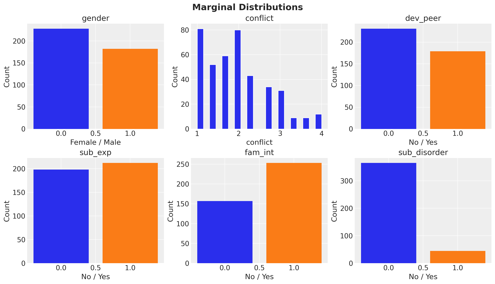
Now let’s compute a cross-tabulation of the outcomes by the treatment.
treatment_var = "fam_int"
target_vars = [
"dev_peer",
"sub_exp",
"sub_disorder",
]
cross_tab_df = (
data_df.group_by(treatment_var)
.agg([pl.col(v).mean() for v in target_vars])
.sort(treatment_var)
.unpivot(index=treatment_var, on=target_vars)
)
g = sns.catplot(
data=cross_tab_df,
x=treatment_var,
y="value",
hue=treatment_var,
col="variable",
kind="bar",
height=4,
aspect=0.85,
)
g.figure.suptitle("Outcome Rates by Treatment", fontsize=18, fontweight="bold", y=1.05);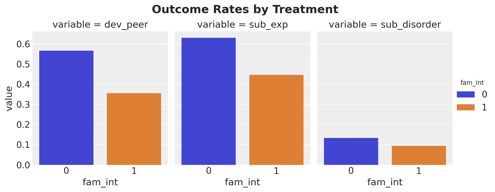
Intervention participants have lower rates across all outcomes, consistent with a protective effect.
PyMC Model Specification
Now that we have a better understanding of the data, we can implement the PyMC model. We build a joint generative model with four Bernoulli likelihoods, each using a logistic link function. The model encodes the causal structure from the DAG above:
fam_int ~ Bernoulli(logistic(gender, conflict))dev_peer ~ Bernoulli(logistic(gender, conflict, fam_int))sub_exp ~ Bernoulli(logistic(gender, conflict, fam_int))sub_disorder ~ Bernoulli(logistic(gender, conflict, dev_peer, sub_exp, fam_int))
This corresponds to the three regression models described in the blog post, plus a model for the treatment assignment mechanism. All four are needed for the full generative model that enables counterfactual reasoning via the do operator.
Remark (priors): All regression coefficients and intercepts use Normal(0, 1) priors. On the log-odds scale, this is moderately informative: it places most prior mass on effects between roughly \(-2\) and \(+2\) log-odds, covering a wide but plausible range of effect sizes for binary outcomes.
Let’s extract the data and define the model.
gender_obs = data_df["gender"].to_numpy()
conflict_obs = data_df["conflict"].to_numpy()
fam_int_obs = data_df["fam_int"].to_numpy()
dev_peer_obs = data_df["dev_peer"].to_numpy()
sub_exp_obs = data_df["sub_exp"].to_numpy()
sub_disorder_obs = data_df["sub_disorder"].to_numpy()coords = {"obs_idx": range(len(data_df))}
# Auxiliary function to add a logistic component to the model
def _add_logistic_component(
outcome_name: str,
param_suffix: str,
predictors: dict[str, pt.TensorVariable],
) -> tuple[pt.TensorVariable, pt.TensorVariable]:
intercept = pm.Normal(f"intercept_{param_suffix}", mu=0, sigma=1)
logit = intercept
for covariate_suffix, variable in predictors.items():
beta = pm.Normal(f"beta_{covariate_suffix}_{param_suffix}", mu=0, sigma=1)
logit = logit + beta * variable
mu = pm.Deterministic(f"mu_{outcome_name}", pt.expit(logit), dims=("obs_idx",))
outcome = pm.Bernoulli(outcome_name, p=mu, dims=("obs_idx",))
return mu, outcome
with pm.Model(coords=coords) as mediation_model:
gender_data = pm.Data("gender_data", gender_obs, dims=("obs_idx",))
conflict_data = pm.Data("conflict_data", conflict_obs, dims=("obs_idx",))
# (1) fam_int: logistic(gender, conflict)
mu_fam_int, fam_int = _add_logistic_component(
"fam_int",
"fi",
{"gender": gender_data, "conflict": conflict_data},
)
# (2) dev_peer: logistic(gender, conflict, fam_int)
mu_dev_peer, dev_peer = _add_logistic_component(
"dev_peer",
"dp",
{"gender": gender_data, "conflict": conflict_data, "fi": fam_int},
)
# (3) sub_exp: logistic(gender, conflict, fam_int)
mu_sub_exp, sub_exp = _add_logistic_component(
"sub_exp",
"se",
{"gender": gender_data, "conflict": conflict_data, "fi": fam_int},
)
# (4) sub_disorder: logistic(gender, conflict, dev_peer, sub_exp, fam_int)
mu_sub_disorder, sub_disorder = _add_logistic_component(
"sub_disorder",
"sd",
{
"gender": gender_data,
"conflict": conflict_data,
"dp": dev_peer,
"se": sub_exp,
"fi": fam_int,
},
)
pm.model_to_graphviz(mediation_model)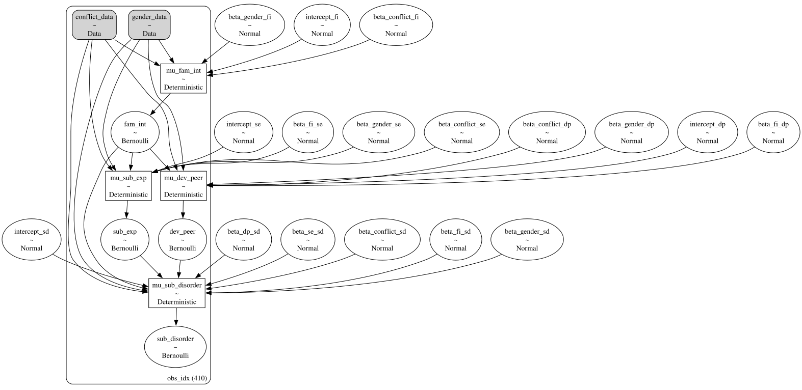
Prior Predictive Checks
Let’s start by checking the prior predictive distribution.
with mediation_model:
prior_idata = pm.sample_prior_predictive(samples=2_000, random_seed=rng)model_vars = [*target_vars, treatment_var]
fig, axes = plt.subplots(
nrows=len(model_vars) // 2,
ncols=2,
figsize=(10, 6),
sharex=True,
sharey=True,
layout="constrained",
)
for ax, var in zip(axes.flatten(), model_vars, strict=True):
prior_samples = prior_idata["prior"][var].values.flatten()
az.plot_posterior(prior_samples, kind="hist", ax=ax)
ax.set(title=var)
fig.suptitle("Prior Predictive Checks", fontsize=16, fontweight="bold");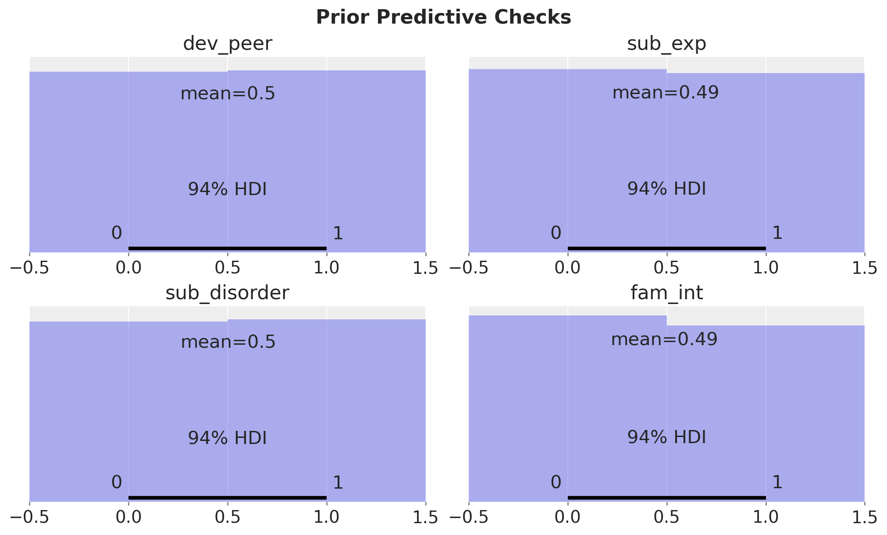
The prior predictive distribution is even between the treatment and control groups.
Model Conditioning and MCMC Fit
We condition (observe) the model on all four endogenous binary variables and fit using MCMC.
conditioned_model = observe(
mediation_model,
{
"fam_int": fam_int_obs,
"dev_peer": dev_peer_obs,
"sub_exp": sub_exp_obs,
"sub_disorder": sub_disorder_obs,
},
)
pm.model_to_graphviz(conditioned_model)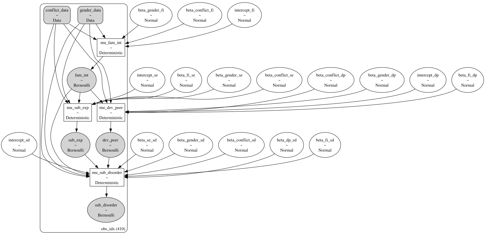
sample_kwargs = {
"draws": 1_000,
"tune": 1_500,
"chains": 6,
"cores": -1,
"nuts_sampler": "nutpie",
"random_seed": rng,
}
with conditioned_model:
idata = pm.sample(**sample_kwargs)Diagnostics
We see no divergences during sampling. Next, we look into the trace plots.
var_names = [
v for v in idata.posterior.data_vars if v.startswith(("intercept_", "beta_"))
]
axes = az.plot_trace(
data=idata,
var_names=var_names,
compact=True,
backend_kwargs={"figsize": (12, 24), "layout": "constrained"},
)
plt.gcf().suptitle("Trace Plots", fontsize=18, fontweight="bold");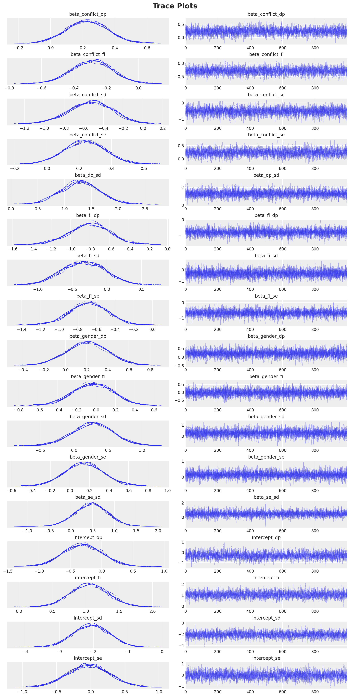
az.summary(idata, var_names=var_names, kind="diagnostics")| mcse_mean | mcse_sd | ess_bulk | ess_tail | r_hat | |
|---|---|---|---|---|---|
| beta_conflict_dp | 0.002 | 0.001 | 4283.0 | 4200.0 | 1.0 |
| beta_conflict_fi | 0.002 | 0.001 | 4831.0 | 4761.0 | 1.0 |
| beta_conflict_sd | 0.003 | 0.003 | 4434.0 | 4309.0 | 1.0 |
| beta_conflict_se | 0.002 | 0.002 | 4353.0 | 4224.0 | 1.0 |
| beta_dp_sd | 0.003 | 0.005 | 10778.0 | 4840.0 | 1.0 |
| beta_fi_dp | 0.002 | 0.003 | 9433.0 | 4248.0 | 1.0 |
| beta_fi_sd | 0.003 | 0.004 | 9121.0 | 4896.0 | 1.0 |
| beta_fi_se | 0.002 | 0.003 | 9919.0 | 4087.0 | 1.0 |
| beta_gender_dp | 0.002 | 0.003 | 13314.0 | 4525.0 | 1.0 |
| beta_gender_fi | 0.002 | 0.003 | 12532.0 | 4648.0 | 1.0 |
| beta_gender_sd | 0.003 | 0.005 | 13855.0 | 4174.0 | 1.0 |
| beta_gender_se | 0.002 | 0.003 | 12879.0 | 4087.0 | 1.0 |
| beta_se_sd | 0.004 | 0.006 | 9371.0 | 4385.0 | 1.0 |
| intercept_dp | 0.005 | 0.004 | 3932.0 | 3636.0 | 1.0 |
| intercept_fi | 0.004 | 0.003 | 4668.0 | 4783.0 | 1.0 |
| intercept_sd | 0.008 | 0.006 | 4261.0 | 4702.0 | 1.0 |
| intercept_se | 0.005 | 0.004 | 4156.0 | 4338.0 | 1.0 |
All parameters show R-hat values close to 1 and high effective sample sizes (ESS), indicating good convergence.
Posterior Predictive Checks
We proceed to sample from the posterior predictive distribution.
with conditioned_model:
pm.sample_posterior_predictive(idata, extend_inferencedata=True, random_seed=rng)Let’s check the posterior predictive mean against the observed data.
fig, axes = plt.subplots(
nrows=2,
ncols=2,
figsize=(12, 8),
layout="constrained",
)
observed_data = {
"fam_int": fam_int_obs,
"dev_peer": dev_peer_obs,
"sub_exp": sub_exp_obs,
"sub_disorder": sub_disorder_obs,
}
for ax, var in zip(axes.flatten(), model_vars, strict=True):
pp_mean = idata["posterior_predictive"][var].mean(dim="obs_idx")
az.plot_posterior(pp_mean, ref_val=observed_data[var].mean(), ax=ax, hdi_prob=0.95)
ax.set_title(f"{var} (posterior predictive mean)", fontsize=12)
fig.suptitle("Posterior Predictive Checks", fontsize=16, fontweight="bold");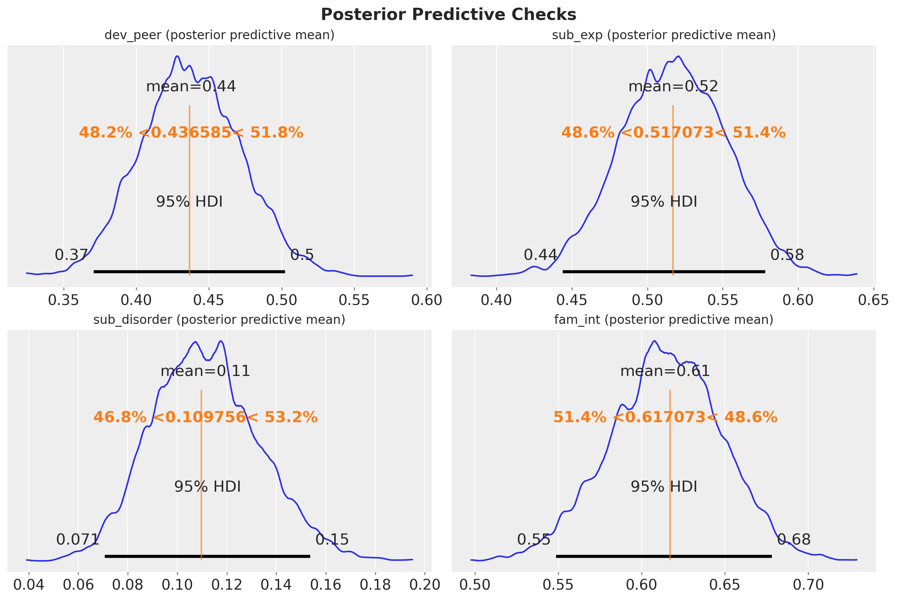
We see that the posterior predictive mean is very close to the observed data.
Coefficient Interpretation
Before moving to causal effect decomposition, it is worth briefly inspecting the fitted coefficients. The beta_fi_* parameters capture the association between family intervention and each downstream variable on the log-odds scale.
fi_coefs = [v for v in var_names if v.startswith("beta_fi_")]
axes = az.plot_forest(
idata,
var_names=fi_coefs,
combined=True,
hdi_prob=0.95,
figsize=(8, 5),
)
plt.gcf().suptitle(
"Family Intervention Coefficients (log-odds)", fontsize=18, fontweight="bold"
);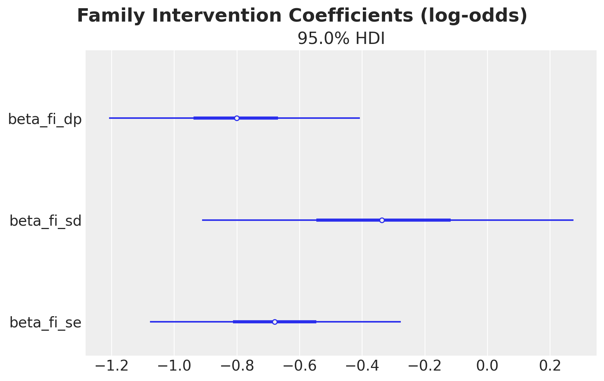
All coefficients are negative, suggesting that family intervention reduces all outcomes on the log-odds scale. However, these are associations conditional on covariates; the causal decomposition below disentangles the direct and indirect pathways.
Total Effect via the do Operator
The total effect (TE) measures how much the probability of substance use disorder changes when we intervene to set family intervention to \(1\) (for everyone) versus \(0\) (for everyone):
\[\text{TE} = \mathbb{E}[Y \mid do(\text{fam_int}=1)] - \mathbb{E}[Y \mid do(\text{fam_int}=0)]\]
We compute this using PyMC’s do operator, following the same pattern as the backdoor adjustment tutorial.
# We apply `do` to the conditioned model so covariates and outcome remain observed
# while only treatment is intervened upon.
do_0_model = do(conditioned_model, {"fam_int": np.zeros(n_obs, dtype=np.int32)})
do_1_model = do(conditioned_model, {"fam_int": np.ones(n_obs, dtype=np.int32)})with do_0_model:
do_0_idata = pm.sample_posterior_predictive(
idata, random_seed=rng, var_names=["mu_sub_disorder"]
)
with do_1_model:
do_1_idata = pm.sample_posterior_predictive(
idata, random_seed=rng, var_names=["mu_sub_disorder"]
)We can now compute the total effect by simply subtracting the posterior predictive means of each intervention model.
mu_sd_do_0 = do_0_idata["posterior_predictive"]["mu_sub_disorder"]
mu_sd_do_1 = do_1_idata["posterior_predictive"]["mu_sub_disorder"]
te_do = (mu_sd_do_1 - mu_sd_do_0).mean(dim="obs_idx")fig, ax = plt.subplots()
az.plot_posterior(
te_do.rename("Total Effect (do operator)"),
hdi_prob=0.95,
ref_val=0,
ax=ax,
)
ax.set_title("Total Effect via do Operator", fontsize=18, fontweight="bold");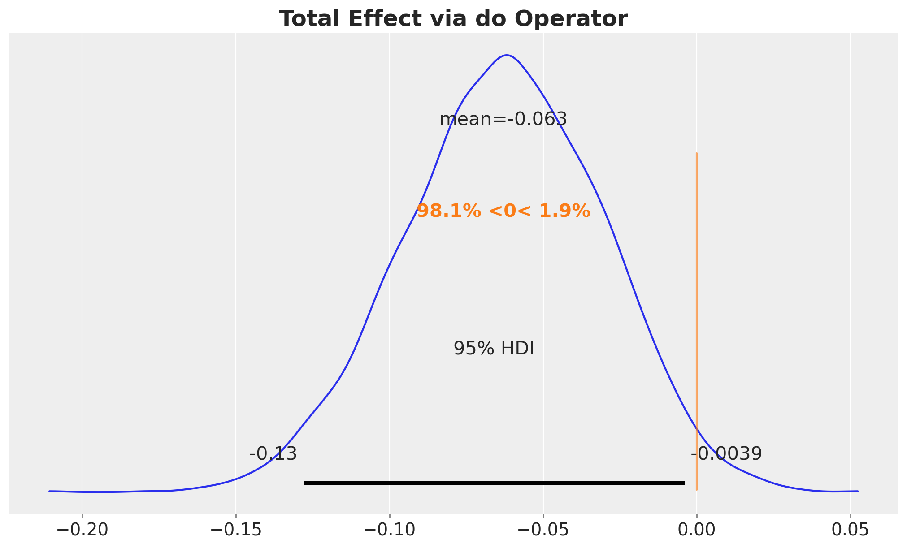
The total effect tells us that the intervention works, but not how. To understand the mechanisms, we decompose the total effect into contributions from each causal pathway.
Mediation Decomposition: Analytical Computation
Since all mediators are binary and conditionally independent given the treatment and covariates, we can compute the interventional expectations analytically from the posterior parameter samples. This is a good exercise to understand the causal decomposition. We will compare these results with the Monte Carlo decomposition, via do operators, below.
The core idea: imagine mixing and matching treatment assignments across different parts of the causal model. What if the outcome equation “sees” treatment, but the mediators behave as if there were no treatment? By comparing these hypothetical scenarios, we isolate each pathway’s contribution.
Notation: Throughout this notebook we use \(M_1 = \text{dev\_peer}\), \(M_2 = \text{sub\_exp}\), \(T = \text{fam\_int}\) and \(Y = \text{sub\_disorder}\).
Remark (conditional independence): The absence of a dev_peer \(\to\) sub_exp edge in the DAG means the two mediators are conditionally independent given treatment and covariates. This makes the joint mediator probability factorize: \(P(M_1, M_2 \mid T, X) = P(M_1 \mid T, X) \cdot P(M_2 \mid T, X)\). If this assumption were violated (e.g., peer engagement causally drives experimentation), we would need to model the joint distribution and adjust accordingly.
Setup
For each posterior draw \(\theta\) and observation \(i\) with covariates \(x_i = (\text{gender}_i, \text{conflict}_i)\), define (where \(\sigma(z) = 1/(1+e^{-z})\) is the logistic sigmoid function):
- \(p_1(t) = P(M_1=1 \mid do(T=t), x_i;\theta) = \sigma(\alpha_{dp} + \beta_{g,dp}\, \text{gender}_i + \beta_{c,dp}\, \text{conflict}_i + \beta_{f,dp}\, t)\)
- \(p_2(t) = P(M_2=1 \mid do(T=t), x_i;\theta) = \sigma(\alpha_{se} + \beta_{g,se}\, \text{gender}_i + \beta_{c,se}\, \text{conflict}_i + \beta_{f,se}\, t)\)
- \(q(t, m_1, m_2) = P(Y=1 \mid T=t, M_1=m_1, M_2=m_2, x_i;\theta)\)
The expected outcome under the interventional regime \((t, t', t'')\), treatment set to \(t\), mediator 1 drawn from its \(do(T=t')\) distribution, mediator 2 drawn from its \(do(T=t'')\) distribution, is:
\[E_{t,t',t''}(x_i;\theta) = \sum_{m_1 \in \{0,1\}} \sum_{m_2 \in \{0,1\}} P(M_1=m_1 \mid T=t') \, P(M_2=m_2 \mid T=t'') \, q(t, m_1, m_2)\]
For example, \(E_{1,0,0}\) answers:
“What would the outcome be if treatment directly affects the outcome (\(t=1\)), but both mediators behave as if there were no treatment (\(t'=0, t''=0\))?”
This is the counterfactual scenario needed to compute the direct effect, via \(DE = E_{1,0,0} − E_{0,0,0}\).
The following table summarizes the six regimes needed for the decomposition:
| Notation | Regime | Interpretation |
|---|---|---|
| \(E_{0,0,0}\) | baseline | No treatment anywhere |
| \(E_{1,1,1}\) | full treatment | Treatment everywhere |
| \(E_{1,0,0}\) | direct only | Treatment in outcome eq., mediators from control |
| \(E_{0,1,0}\) | \(M_1\) pathway | Mediator 1 from treatment, rest from control |
| \(E_{0,0,1}\) | \(M_2\) pathway | Mediator 2 from treatment, rest from control |
| \(E_{0,1,1}\) | both mediators | Both mediators from treatment, outcome from control |
Effects (matching the blog post table)
- Total Effect: \(\text{TE} = \bar{E}_{1,1,1} - \bar{E}_{0,0,0}\)
- Direct Effect: \(\text{DE} = \bar{E}_{1,0,0} - \bar{E}_{0,0,0}\)
- Indirect through dev_peer: \(\text{IIE}_1 = \bar{E}_{0,1,0} - \bar{E}_{0,0,0}\)
- Indirect through sub_exp: \(\text{IIE}_2 = \bar{E}_{0,0,1} - \bar{E}_{0,0,0}\)
- Interaction: \(\text{INT} = \bar{E}_{0,1,1} - \bar{E}_{0,1,0} - \bar{E}_{0,0,1} + \bar{E}_{0,0,0}\)
- Dependence: \(\text{DEP} = \text{TE} - \text{DE} - \text{IIE}_1 - \text{IIE}_2 - \text{INT}\)
- Proportion through M1: \(\text{IIE}_1 / \text{TE}\)
- Proportion through M2: \(\text{IIE}_2 / \text{TE}\)
where \(\bar{E}\) denotes averaging over observations.
The dependence term captures any remaining contribution from joint shifts in the mediator distributions that is not explained by the individual indirect effects or their interaction. Because the individual effect sizes are modest, higher-order interactions between the direct and indirect pathways are small, so this term is negligible in practice.
Extracting posterior samples for manual computation
To compute the interventional expectations analytically, we need to evaluate the logistic regression equations from our model for each posterior draw. We extract
all regression coefficients as NumPy arrays with shape (n_chains, n_draws, 1) so they broadcast naturally against the covariate arrays of shape (1, 1, n_obs). This gives us (n_chains, n_draws, n_obs) arrays, one predicted probability per posterior draw and observation.
posterior = idata.posterior
# Covariates: shape (1, 1, n_obs) for broadcasting
# with (n_chains, n_draws, 1) parameters
gender_arr = gender_obs[np.newaxis, np.newaxis, :]
conflict_arr = conflict_obs[np.newaxis, np.newaxis, :]
def _get_param(name: str) -> np.ndarray:
"""Extract posterior samples as a (n_chains, n_draws, 1) array for broadcasting."""
return posterior[name].values[:, :, np.newaxis]
# --- dev_peer sub-model parameters ---
intercept_dp_s = _get_param("intercept_dp")
beta_gender_dp_s = _get_param("beta_gender_dp")
beta_conflict_dp_s = _get_param("beta_conflict_dp")
beta_fi_dp_s = _get_param("beta_fi_dp")
# --- sub_exp sub-model parameters ---
intercept_se_s = _get_param("intercept_se")
beta_gender_se_s = _get_param("beta_gender_se")
beta_conflict_se_s = _get_param("beta_conflict_se")
beta_fi_se_s = _get_param("beta_fi_se")
# --- sub_disorder sub-model parameters ---
intercept_sd_s = _get_param("intercept_sd")
beta_gender_sd_s = _get_param("beta_gender_sd")
beta_conflict_sd_s = _get_param("beta_conflict_sd")
beta_dp_sd_s = _get_param("beta_dp_sd")
beta_se_sd_s = _get_param("beta_se_sd")
beta_fi_sd_s = _get_param("beta_fi_sd")Mediator and outcome probability functions
These three functions reconstruct the logistic regressions from the model, evaluating them at arbitrary treatment / mediator values using the posterior
parameter samples. Each returns an (n_chains, n_draws, n_obs) array of probabilities.
def p_dev_peer(t: int) -> np.ndarray:
"""P(dev_peer=1 | do(fam_int=t), X) for each posterior draw and observation."""
logit = (
intercept_dp_s
+ beta_gender_dp_s * gender_arr
+ beta_conflict_dp_s * conflict_arr
+ beta_fi_dp_s * t
)
return expit(logit)
def p_sub_exp(t: int) -> np.ndarray:
"""P(sub_exp=1 | do(fam_int=t), X) for each posterior draw and observation."""
logit = (
intercept_se_s
+ beta_gender_se_s * gender_arr
+ beta_conflict_se_s * conflict_arr
+ beta_fi_se_s * t
)
return expit(logit)
def p_sub_disorder(t: int, m1: int, m2: int) -> np.ndarray:
"""P(sub_disorder=1 | fam_int=t, dev_peer=m1, sub_exp=m2, X)."""
logit = (
intercept_sd_s
+ beta_gender_sd_s * gender_arr
+ beta_conflict_sd_s * conflict_arr
+ beta_dp_sd_s * m1
+ beta_se_sd_s * m2
+ beta_fi_sd_s * t
)
return expit(logit)Marginalizing over binary mediators
The key observation that both mediators are binary allows us to enumerate all four \((m_1, m_2) \in \{0,1\}^2\) combinations and weight the outcome probability by the joint mediator probability. Since the mediators are conditionally independent given treatment and covariates, the joint probability factorizes: \(P(M_1=m_1, M_2=m_2) = P(M_1=m_1) \cdot P(M_2=m_2)\).
The three subscripts in \(E_{t, t', t''}\) control:
- \(t\): the treatment value plugged into the outcome equation
- \(t'\): the treatment value used to generate the dev_peer mediator distribution
- \(t''\): the treatment value used to generate the sub_exp mediator distribution
By mixing and matching these subscripts we can isolate each causal pathway.
def expected_outcome(t: int, t_m1: int, t_m2: int) -> np.ndarray:
"""E[Y | do(T=t), M1 ~ do(T=t_m1), M2 ~ do(T=t_m2)].
Returns an (n_chains, n_draws, n_obs) array. Analytically marginalizes over the
four binary mediator combinations, weighted by their interventional
probabilities.
"""
p1 = p_dev_peer(t_m1) # P(dev_peer=1 | do(T=t'))
p2 = p_sub_exp(t_m2) # P(sub_exp=1 | do(T=t''))
# Enumerate all (m1, m2) ∈ {0,1}² and weight by joint mediator probability
return (
p1 * p2 * p_sub_disorder(t, 1, 1)
+ p1 * (1 - p2) * p_sub_disorder(t, 1, 0)
+ (1 - p1) * p2 * p_sub_disorder(t, 0, 1)
+ (1 - p1) * (1 - p2) * p_sub_disorder(t, 0, 0)
)Computing all interventional expectations and effects
We now evaluate \(E_{t,t',t''}\) for the six regimes from the table above.
expected_000 = expected_outcome(0, 0, 0) # baseline: no treatment anywhere
expected_111 = expected_outcome(1, 1, 1) # full treatment everywhere
expected_100 = expected_outcome(1, 0, 0) # direct: treatment only in outcome equation
expected_010 = expected_outcome(0, 1, 0) # indirect M1: dev_peer from treatment
expected_001 = expected_outcome(0, 0, 1) # indirect M2: sub_exp from treatment
expected_011 = expected_outcome(0, 1, 1) # both mediators from treatment
def _to_xarray(arr: np.ndarray, name: str) -> xr.DataArray:
"""Wrap a (n_chains, n_draws) array into a named xarray DataArray."""
return xr.DataArray(
arr,
dims=("chain", "draw"),
coords={"chain": posterior.chain, "draw": posterior.draw},
name=name,
)
te_analytical = _to_xarray((expected_111 - expected_000).mean(axis=-1), "TE")
de = _to_xarray((expected_100 - expected_000).mean(axis=-1), "DE")
iie_m1 = _to_xarray((expected_010 - expected_000).mean(axis=-1), "IIE_M1")
iie_m2 = _to_xarray((expected_001 - expected_000).mean(axis=-1), "IIE_M2")
interaction = _to_xarray(
(expected_011 - expected_010 - expected_001 + expected_000).mean(axis=-1), "INT"
)
dependence = (te_analytical - de - iie_m1 - iie_m2 - interaction).rename("DEP")
# Note: proportions can be unstable when TE is near zero for individual
# posterior draws, producing extreme values. Interpret with caution.
prop_m1 = (iie_m1 / te_analytical).rename("prop_M1")
prop_m2 = (iie_m2 / te_analytical).rename("prop_M2")Let’s visualize the results and compare them against zero.
effects = {
"Indirect through dev_peer (M1)": iie_m1,
"Indirect through sub_exp (M2)": iie_m2,
"Interaction between mediators": interaction,
"Dependence between mediators": dependence,
"Direct effect": de,
"Total effect": te_analytical,
}
fig, axes = plt.subplots(
nrows=3,
ncols=2,
figsize=(14, 12),
sharex=True,
layout="constrained",
)
for ax, (name, samples) in zip(axes.flatten(), effects.items(), strict=True):
az.plot_posterior(samples, hdi_prob=0.95, ref_val=0, ax=ax)
ax.set_title(name, fontsize=14)
fig.suptitle("Mediation Decomposition (Analytical)", fontsize=18, fontweight="bold");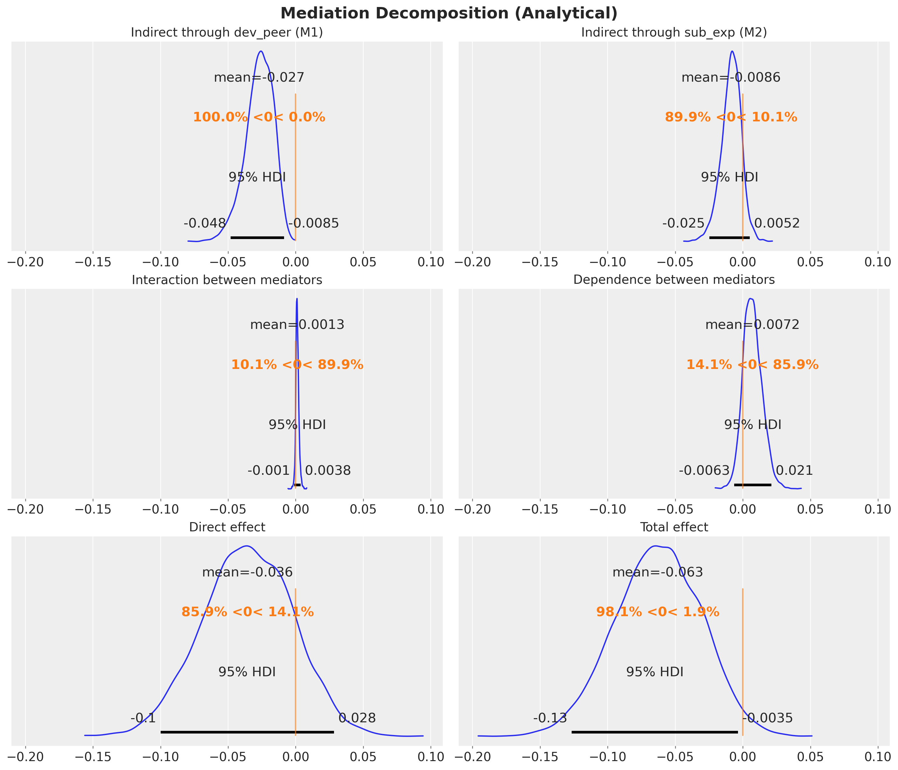
Decomposition Summary
The following bar chart shows how the total effect decomposes into its components. This is a key plot of the analysis.
How to read the plot: Each colored bar represents one component of the mediation decomposition, with the bar length indicating the posterior mean and the error bars showing the 95% HDI. The black diamond at the top is the total effect (TE), which by construction equals the sum of all five components below it: DE + IIE(M1) + IIE(M2) + INT + DEP. Negative values indicate that the component reduces the probability of substance use disorder (a protective effect). The dashed vertical line marks zero (no effect).
ax, *_ = az.plot_forest(
data=[te_analytical, de, iie_m1, iie_m2, interaction, dependence],
model_names=["TE", "DE", "IIE(M1)", "IIE(M2)", "INT", "DEP"],
combined=True,
figsize=(10, 6),
)
ax.set_title("Mediation Decomposition", fontsize=18, fontweight="bold");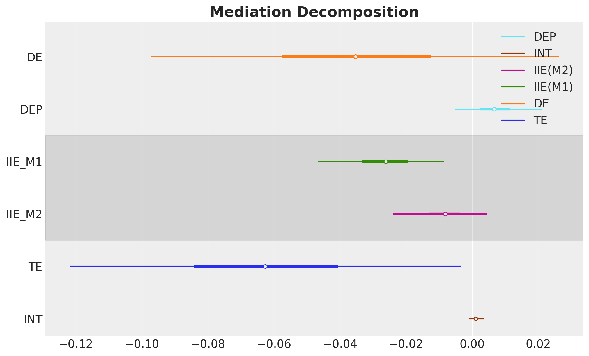
Verification: We can verify numerically that the decomposition holds, i.e. that the sum of the five components equals the total effect at every posterior draw.
te_from_components = de + iie_m1 + iie_m2 + interaction + dependence
discrepancy = te_analytical - te_from_components
print("Decomposition check (TE - sum of components):")
print(f" Max absolute discrepancy: {float(np.abs(discrepancy).max()):.2e}")
print(f" Mean absolute discrepancy: {float(np.abs(discrepancy).mean()):.2e}")Decomposition check (TE - sum of components):
Max absolute discrepancy: 4.16e-17
Mean absolute discrepancy: 4.13e-18Mediation Decomposition via do Operator
The analytical decomposition above required us to manually extract posterior parameters and reconstruct the logistic regression equations in NumPy. This works, but it is tightly coupled to the model specification: if we changed the link function, added interactions, or used continuous mediators, we would need to rewrite the helper functions from scratch.
The do operator offers a model-agnostic alternative. Instead of pulling out parameters, we intervene directly on the generative model and let PyMC’s sample_posterior_predictive compute the quantities we need. The only requirement is that we can enumerate (or sample from) the mediator support — which is trivial for binary mediators.
Strategy: We assemble \(E_{t,t',t''}\) from two ingredients, both obtained via do:
- Mediator probabilities: From
do(fam_int=t)models we read offmu_dev_peerandmu_sub_exp, giving \(P(M_k=1 \mid do(T=t))\) per posterior draw and observation. - Outcome corner values — For each of the 8 combinations \((t, m_1, m_2) \in \{0,1\}^3\), we intervene on all three variables via
do(fam_int=t, dev_peer=m_1, sub_exp=m_2)and read offmu_sub_disorder, giving \(q(t, m_1, m_2)\).
The marginalization formula is the same as before:
\[E_{t,t',t''} = \sum_{m_1, m_2} P(M_1=m_1 \mid do(T=t'))\, P(M_2=m_2 \mid do(T=t''))\, q(t, m_1, m_2)\]
Step 1: Mediator probabilities under each treatment level
with do_0_model:
do_0_mediators = pm.sample_posterior_predictive(
idata, random_seed=rng, var_names=["mu_dev_peer", "mu_sub_exp"]
)
with do_1_model:
do_1_mediators = pm.sample_posterior_predictive(
idata, random_seed=rng, var_names=["mu_dev_peer", "mu_sub_exp"]
)
mu_dp_do = {
0: do_0_mediators["posterior_predictive"]["mu_dev_peer"],
1: do_1_mediators["posterior_predictive"]["mu_dev_peer"],
}
mu_se_do = {
0: do_0_mediators["posterior_predictive"]["mu_sub_exp"],
1: do_1_mediators["posterior_predictive"]["mu_sub_exp"],
}We now have mu_dp_do[t] and mu_se_do[t] — the probability that each mediator equals 1 under do(fam_int=t), for every posterior draw and observation. These are
the weights in our marginalization formula. Next we need the outcome probabilities at every corner of the mediator space.
Step 2: Outcome probabilities for all \((t, m_1, m_2)\) corners
q_do = {}
# 8 interventions: all (fam_int, dev_peer, sub_exp) in {0,1}^3
for t, m1, m2 in product([0, 1], repeat=3):
interventions = {
"fam_int": np.full(n_obs, t, dtype=np.int32),
"dev_peer": np.full(n_obs, m1, dtype=np.int32),
"sub_exp": np.full(n_obs, m2, dtype=np.int32),
}
model_tmm = do(conditioned_model, interventions)
with model_tmm:
pp = pm.sample_posterior_predictive(
idata, random_seed=rng, var_names=["mu_sub_disorder"]
)
q_do[(t, m1, m2)] = pp["posterior_predictive"]["mu_sub_disorder"]Step 3: Compute all interventional expectations and effects
We now have all the building blocks: mediator probabilities under each treatment level (mu_dp_do, mu_se_do) and outcome probabilities for every \((t, m_1, m_2)\) corner (q_do). What remains is to combine them into the interventional expectations \(E_{t,t',t''}\).
Why can’t we use a single do intervention per regime?
For aligned regimes like \(E_{0,0,0}\) and \(E_{1,1,1}\), a single do(fam_int=t) does suffice: every structural equation sees the same treatment value and the mediators are naturally forward-sampled from their interventional distributions. But for mixed regimes like \(E_{1,0,0}\) (the direct-effect building block), the outcome equation needs fam_int=1 while the mediators must follow their do(T=0) distributions. The do operator sets a variable to one value across all structural equations simultaneously; it cannot assign different treatment values to different equations.
One might also consider intervening on all three variables at once, e.g. do(fam_int=0, dev_peer=0, sub_exp=0). However, this fixes the mediators to one specific corner, giving the outcome probability \(q(0, 0, 0)\), not the full expectation \(E_{0,0,0}\), which is a weighted average over all four mediator corners.
This is why we need a two-tiered approach: (1) collect building blocks via do (mediator probabilities and corner outcomes), then (2) combine them using the marginalization formula below.
Why is conditional independence required?
The marginalization function expected_do_op below is fully general: it sums over any joint mediator probability table. However, constructing that joint table for mixed regimes requires the mediators to be conditionally independent given treatment and covariates. Consider \(E_{0,1,0}\): it draws \(M_1\) from do(T=1) and \(M_2\) from do(T=0), two different intervention worlds. If an edge \(M_1 \to M_2\) existed, \(M_2\)’s distribution would depend on \(M_1\), but \(M_1\) comes from a different intervention than \(M_2\), making the joint distribution ill-defined without independence. This is not a code limitation but a mathematical requirement of the per-mediator decomposition. Under conditional independence, the joint factorizes as a product of marginals, and the function joint_from_marginals below encodes exactly this assumption.
def joint_from_marginals(
mediator_probs: list[xr.DataArray],
) -> dict[tuple[int, ...], xr.DataArray]:
"""Joint mediator distribution as product of marginals.
Assumes conditional independence of mediators given treatment
and covariates: P(M1, M2 | T, X) = P(M1 | T, X) * P(M2 | T, X).
This factorization is required for mixed regimes where different
mediators receive treatment values from different interventions.
For dependent mediators, the per-mediator decomposition (IIE_M1,
IIE_M2) would need to be redefined.
"""
joint: dict[tuple[int, ...], xr.DataArray] = {}
for corner in product([0, 1], repeat=len(mediator_probs)):
weight: xr.DataArray | int = 1
for prob, m in zip(mediator_probs, corner, strict=True):
weight = weight * (prob if m == 1 else (1 - prob))
joint[corner] = weight
return joint
def expected_do_op(
t: int,
joint_mediator_probs: dict[tuple[int, ...], xr.DataArray],
) -> xr.DataArray:
"""Compute E_{t,t',t''} by marginalizing over mediator corners.
Sums over all (m1, m2, ...) combinations, weighting each corner's
outcome probability q(t, m1, m2, ...) by the joint mediator
probability. Fully general: works with any joint distribution,
not just factorized (conditionally independent) ones.
"""
result: xr.DataArray | int = 0
for corner, prob in joint_mediator_probs.items():
result = result + prob * q_do[(t, *corner)]
return result.mean(dim="obs_idx")After this conceptual digression, we compute the six interventional expectations and the effects.
expected_do_000 = expected_do_op(0, joint_from_marginals([mu_dp_do[0], mu_se_do[0]]))
expected_do_111 = expected_do_op(1, joint_from_marginals([mu_dp_do[1], mu_se_do[1]]))
expected_do_100 = expected_do_op(1, joint_from_marginals([mu_dp_do[0], mu_se_do[0]]))
expected_do_010 = expected_do_op(0, joint_from_marginals([mu_dp_do[1], mu_se_do[0]]))
expected_do_001 = expected_do_op(0, joint_from_marginals([mu_dp_do[0], mu_se_do[1]]))
expected_do_011 = expected_do_op(0, joint_from_marginals([mu_dp_do[1], mu_se_do[1]]))
te_do_decomp = expected_do_111 - expected_do_000
de_do = expected_do_100 - expected_do_000
iie_m1_do = expected_do_010 - expected_do_000
iie_m2_do = expected_do_001 - expected_do_000
interaction_do = expected_do_011 - expected_do_010 - expected_do_001 + expected_do_000
dependence_do = te_do_decomp - de_do - iie_m1_do - iie_m2_do - interaction_do
prop_m1_do = iie_m1_do / te_do_decomp
prop_m2_do = iie_m2_do / te_do_decompWe can now visualize the results.
effects_do = {
"Indirect through dev_peer (M1)": iie_m1_do,
"Indirect through sub_exp (M2)": iie_m2_do,
"Interaction between mediators": interaction_do,
"Dependence between mediators": dependence_do,
"Direct effect": de_do,
"Total effect": te_do_decomp,
}
fig, axes = plt.subplots(
nrows=3, ncols=2, figsize=(14, 12), layout="constrained", sharex=True
)
for ax, (name, samples) in zip(axes.flatten(), effects_do.items(), strict=True):
az.plot_posterior(samples, hdi_prob=0.95, ref_val=0, ax=ax)
ax.set_title(name, fontsize=12)
fig.suptitle("Mediation Decomposition (do Operator)", fontsize=16, fontweight="bold")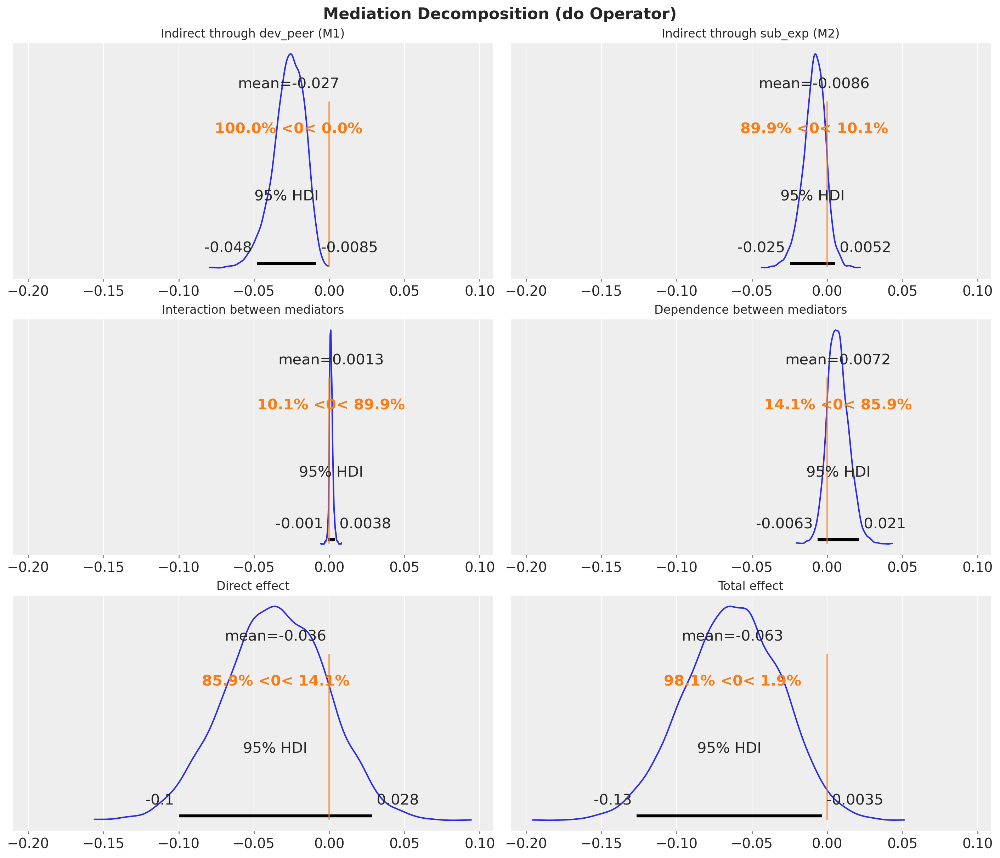
Comparison: Analytical vs do Operator
Since both approaches compute the same interventional expectations from the same posterior, they should agree exactly (up to floating-point precision). Let’s verify this for all 6 effects.
effects_comparison = {
"Indirect through dev_peer (M1)": (iie_m1, iie_m1_do),
"Indirect through sub_exp (M2)": (iie_m2, iie_m2_do),
"Interaction between mediators": (interaction, interaction_do),
"Dependence between mediators": (dependence, dependence_do),
"Direct effect": (de, de_do),
"Total effect": (te_analytical, te_do_decomp),
}
fig, axes = plt.subplots(
nrows=3, ncols=2, figsize=(12, 9), layout="constrained", sharex=True
)
for ax, (name, (analytical_s, do_s)) in zip(
axes.flatten(), effects_comparison.items(), strict=True
):
az.plot_forest(
data=[analytical_s, do_s],
model_names=["Analytical", "do operator"],
combined=True,
hdi_prob=0.95,
ax=ax,
)
ax.axvline(0, color="grey", linestyle="--", alpha=0.5)
ax.set_title(name, fontsize=14)
fig.suptitle(
"Cross-validation: Analytical vs do Operator",
fontsize=18,
fontweight="bold",
y=1.05,
);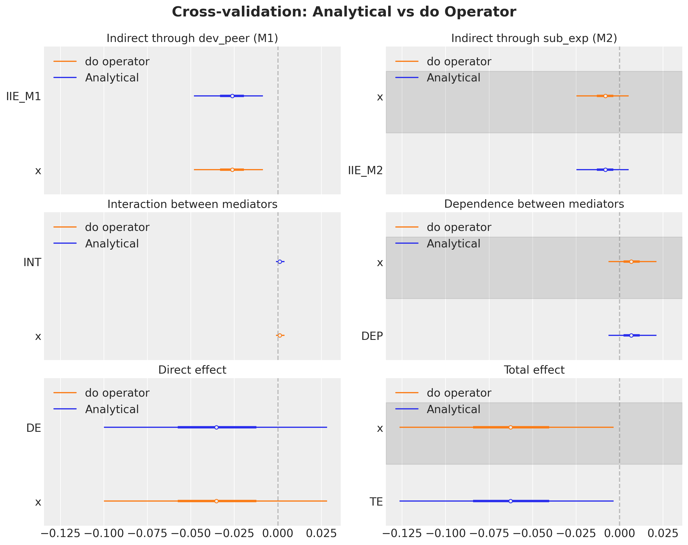
Both approaches yield identical results, confirming correctness. The do operator approach is more general: it does not require manually extracting posterior parameters or constructing logistic functions. All building blocks come from sample_posterior_predictive on appropriately intervened models.
Summary: Comparison with Blogpost Results
The original blog post used the intmed R package with multiple imputation and \(1000\) Monte Carlo simulations. Our Bayesian approach uses PyMC with MCMC inference, dropping missing values
instead of imputing. Despite these methodological differences, we expect qualitatively similar results.
blogpost_results = pl.DataFrame(
{
"effect": [
"Indirect through dev_peer (M1)",
"Indirect through sub_exp (M2)",
"Interaction between mediators",
"Dependence between mediators",
"Direct effect",
"Total effect",
"Proportion through M1",
"Proportion through M2",
],
"blogpost_est": [
-0.018,
-0.007,
0.001,
0.000,
-0.055,
-0.077,
0.218,
0.078,
],
"blogpost_ci_lower": [
-0.037,
-0.021,
-0.002,
-0.009,
-0.120,
-0.143,
None,
None,
],
"blogpost_ci_upper": [
-0.004,
0.004,
0.005,
0.009,
0.010,
-0.016,
None,
None,
],
}
)
all_effects = {
"Indirect through dev_peer (M1)": iie_m1,
"Indirect through sub_exp (M2)": iie_m2,
"Interaction between mediators": interaction,
"Dependence between mediators": dependence,
"Direct effect": de,
"Total effect": te_analytical,
"Proportion through M1": prop_m1,
"Proportion through M2": prop_m2,
}
pymc_means = []
pymc_hdi_lower = []
pymc_hdi_upper = []
for name in blogpost_results["effect"].to_list():
samples = all_effects[name]
mean_val = samples.mean()
hdi_ds = az.hdi(samples, hdi_prob=0.95)
hdi_low = hdi_ds[samples.name].sel(hdi="lower")
hdi_high = hdi_ds[samples.name].sel(hdi="higher")
pymc_means.append(mean_val)
pymc_hdi_lower.append(hdi_low)
pymc_hdi_upper.append(hdi_high)
blogpost_results = blogpost_results.with_columns(
pl.Series("pymc_mean", pymc_means),
pl.Series("pymc_hdi_lower", pymc_hdi_lower),
pl.Series("pymc_hdi_upper", pymc_hdi_upper),
)
blogpost_results.to_pandas().style.format(
{
"blogpost_est": "{:.3f}",
"blogpost_ci_lower": "{:.3f}",
"blogpost_ci_upper": "{:.3f}",
"pymc_mean": "{:.3f}",
"pymc_hdi_lower": "{:.3f}",
"pymc_hdi_upper": "{:.3f}",
},
na_rep="—",
)| effect | blogpost_est | blogpost_ci_lower | blogpost_ci_upper | pymc_mean | pymc_hdi_lower | pymc_hdi_upper | |
|---|---|---|---|---|---|---|---|
| 0 | Indirect through dev_peer (M1) | -0.018 | -0.037 | -0.004 | -0.027 | -0.048 | -0.009 |
| 1 | Indirect through sub_exp (M2) | -0.007 | -0.021 | 0.004 | -0.009 | -0.025 | 0.005 |
| 2 | Interaction between mediators | 0.001 | -0.002 | 0.005 | 0.001 | -0.001 | 0.004 |
| 3 | Dependence between mediators | 0.000 | -0.009 | 0.009 | 0.007 | -0.006 | 0.021 |
| 4 | Direct effect | -0.055 | -0.120 | 0.010 | -0.036 | -0.100 | 0.028 |
| 5 | Total effect | -0.077 | -0.143 | -0.016 | -0.063 | -0.127 | -0.004 |
| 6 | Proportion through M1 | 0.218 | — | — | 0.573 | 0.055 | 1.683 |
| 7 | Proportion through M2 | 0.078 | — | — | 0.166 | -0.235 | 0.632 |
causal_effects = {k: v for k, v in all_effects.items() if "Proportion" not in k}
fig, ax = plt.subplots(figsize=(10, 6))
y_positions = np.arange(len(causal_effects))
effect_names = list(causal_effects.keys())
for i, name in enumerate(effect_names):
samples = causal_effects[name]
mean_val = samples.mean()
hdi_ds = az.hdi(samples, hdi_prob=0.95)
hdi_low = hdi_ds[samples.name].sel(hdi="lower")
hdi_high = hdi_ds[samples.name].sel(hdi="higher")
ax.errorbar(
mean_val,
i,
xerr=[[mean_val - hdi_low], [hdi_high - mean_val]],
fmt="o",
color="C0",
capsize=4,
label="PyMC (95% HDI)" if i == 0 else None,
)
bp_row = blogpost_results.filter(pl.col("effect") == name)
bp_est = bp_row["blogpost_est"][0]
bp_lo = bp_row["blogpost_ci_lower"][0]
bp_hi = bp_row["blogpost_ci_upper"][0]
if bp_lo is not None and bp_hi is not None:
ax.errorbar(
bp_est,
i + 0.15,
xerr=[[bp_est - bp_lo], [bp_hi - bp_est]],
fmt="s",
color="C1",
capsize=4,
markersize=7,
label="Blogpost (95% CI)" if i == 0 else None,
)
else:
ax.plot(
bp_est,
i + 0.15,
"s",
color="C1",
markersize=7,
label="Blogpost" if i == 0 else None,
)
ax.axvline(0, color="grey", linestyle="--", alpha=0.5)
ax.set_yticks(y_positions)
ax.set_yticklabels(effect_names)
ax.set_xlabel("Effect (probability scale)")
ax.legend(loc="lower left")
ax.set_title("Mediation Effects: PyMC vs Blogpost", fontsize=16, fontweight="bold");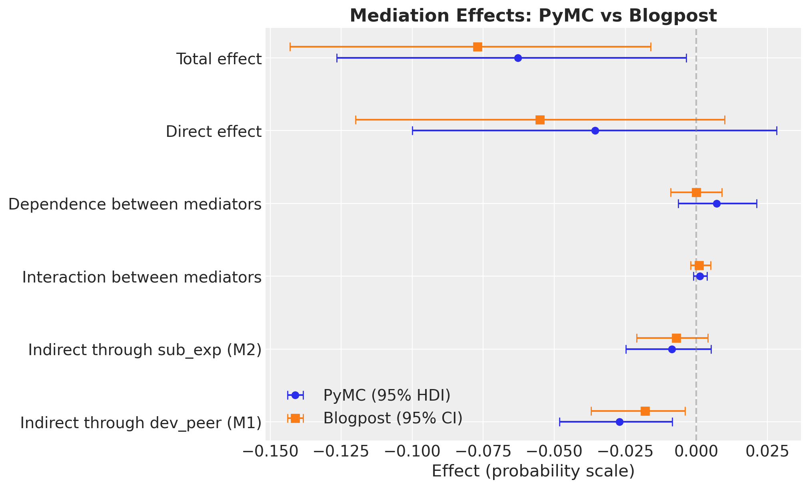